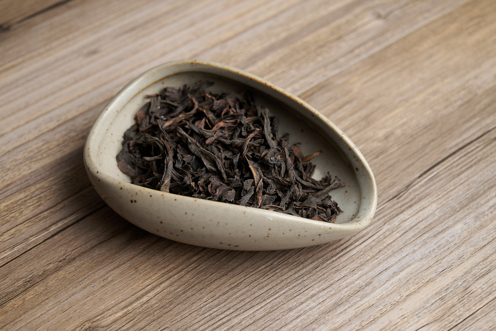
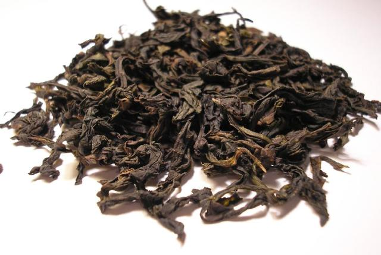
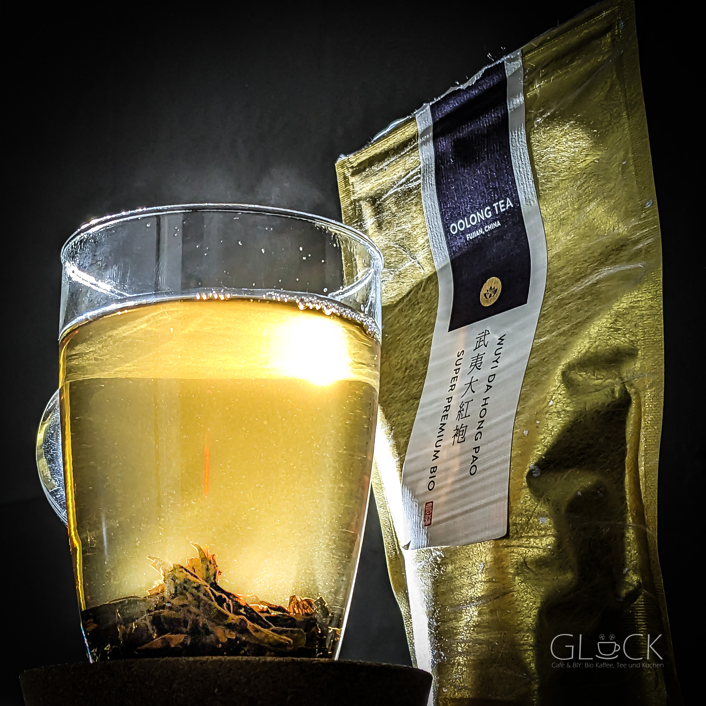

乌龙茶专题
鸭屎香单丛：一个名字很“土”的凤凰茶，为什么能同时牵出香型、山场、做青与新茶饮热度？
如果只看名字，鸭屎香大概是最容易让第一次接触中国茶的人当场愣住的一款茶。它不像龙井、碧螺春那样听起来一身名士气，也不像大红袍那样自带传奇包装。“鸭屎香”这三个字甚至有点像故意反高雅：土、怪、带点玩笑感。但真正喝到好鸭屎香的人，通常都会很快意识到，名字只是门口那块最吵的招牌，真正值得花时间进入的，是它背后那整套凤凰单丛世界——山场、香型、做青、焙火、丛味、杯中高香，以及潮汕工夫茶那种把一泡茶泡到有骨有肉的日常技艺。
它这两年在中文互联网的存在感之所以持续走高，也不只是因为名字容易传播。新茶饮把“鸭屎香柠檬茶”“鸭屎香奶茶”“鸭屎香轻乳茶”带进城市街头之后，越来越多人是先在饮料菜单上认识这三个字，再回头问：它原本到底是什么茶？为什么一个原叶乌龙会被这么多品牌反复点名？名字为什么有人坚持保留，也有人试图改成更“雅”的银花香？这些问题加在一起，让鸭屎香成了一个非常适合做茶类知识长稿的入口：它既有现实热度，又不只是热搜话题，而是能一路通向中国乌龙茶内部非常细密的知识结构。

鸭屎香到底是什么茶？它和“凤凰单丛”是什么关系？
先把最容易混乱的一层讲清楚：鸭屎香不是一个脱离体系独立存在的网红名字，它首先属于凤凰单丛这一大类。凤凰单丛是广东潮州凤凰山一带出产的代表性乌龙茶，通常被放在乌龙茶谱系里最强调“香型分化”和“山场个性”的位置。和很多读者更熟悉的闽北岩茶、闽南铁观音相比，凤凰单丛更容易让人先被香气记住：蜜兰香、芝兰香、黄枝香、杏仁香、通天香、鸭屎香……这一串名字本身就像一个香型档案馆。
但“单丛”并不只是香型目录。它原本对应的是从群体品种中分离、选育、观察、保留出来的优异单株或单株后代系统，后来又逐步演化成今天兼具品种、香型、山场与商品表达的复杂体系。也就是说，当你说“鸭屎香”时，不能只理解成“一款很香的乌龙”。更准确的理解是：它是凤凰单丛体系中极具辨识度、讨论度也很高的一支，名声大到甚至常常压过了读者对“凤凰单丛”四个字本身的理解。

为什么偏偏叫“鸭屎香”？名字越怪，争议越大吗？
鸭屎香最出圈的地方，当然是名字。围绕命名的流行说法很多，最常见的一条线索是：原茶种植在当地俗称“鸭屎土”的土壤环境中，茶农又担心优良品种太早被人盯上，于是故意起了一个不那么“讨喜”的名字来降低外界注意力。后来它越做越出名，这个原本带点遮掩意味的名字反而成了最强识别符号。中文互联网之所以反复讨论它，也正是因为它天然自带一种反差：名字粗粝，香气却常常清扬、细致、带花韵，传播效果极强。
这也引出了另一层现实争议：2010 年代以后，曾有把“鸭屎香”改称“银花香”的努力，理由很简单——前者太土，不够雅，不够适合“登大雅之堂”。但不少茶友和从业者并不买账，因为一旦改掉，地方性、民间性和记忆点都会被削弱。更重要的是，鸭屎香之所以今天能在大众层面迅速被记住，并不只是因为味道好，而是因为这个名字让人没法忽略它。对内容写作来说，这恰恰是好题材：命名不是边角料，它本身就反映了地方茶如何在现代市场里被重新包装、争夺、翻译。
鸭屎香的香，到底是什么香？为什么有人说花香高扬，有人却说不是“香精感”？
第一次喝鸭屎香的人，最容易先记住的是香。但真正值得学的地方恰恰在于：它不是那种一冲就平面扑脸、喝两口就塌掉的“香”。好鸭屎香常常表现为扬、透、清、细，带花香、蜜韵、轻微果甜感，香会从盖香、杯香一直延续到口腔和喉间回味。它不是只停在鼻尖，而是会进入汤感，变成一种“香在水里”的感觉。也正因为如此，茶圈里常有人强调，判断单丛不能只靠闻第一鼻子，得看水路、回甘、韵味能不能接住香气。
这也是为什么很多人把单丛和劣质香精茶混为一谈，其实完全看错方向。鸭屎香的真正难点在于：高香不难做得浮，难的是做得净、做得稳、做得有骨架。香如果只漂在表面，没有汤感托住，就会显得尖、薄、散；如果焙火压不住青味，香会杂；如果焙得过重，又会把原本灵动的花香压扁。所以真正好的鸭屎香，不是“越炸越好”，而是香高而不轻浮，细而不虚空，入口后还能留下清晰的回甘和山场气。
山场为什么重要？凤凰茶为什么总在讲海拔、村头和丛味？
讲鸭屎香，绕不过山场。凤凰单丛的魅力，很大一部分就在于它不像工业饮料那样追求无限标准化，反而非常强调具体的生长地点：是不是凤凰山核心区域，海拔多高，坡向如何，昼夜温差大不大，土壤保水与排水怎样，茶树树龄如何，甚至同一香型在不同村头、不同片区都可能做出明显差别。对习惯喝“某品牌某口味”的城市消费者来说，这是一种很不一样的思路：茶不是一个固定配方，而是风土不断参与表达的活物。
潮州人常说“丛味”，其实就是在提醒你，单丛的价值不只是香型标签。真正耐喝的鸭屎香，不会只让你记住“这泡很香”，而会让你慢慢感觉到它的底子：汤是否厚，回甘是否深，喉韵是否足，香气是不是从头到尾有层次地展开，而不是前高后空。山场好、原料好、做工稳，这些条件叠在一起，才可能让一泡茶从“有辨识度”走到“有记忆”。

鸭屎香是怎么做出来的？“做青”和焙火为什么决定了它不是随便一泡香茶？
从工艺上看，鸭屎香属于半发酵乌龙茶，它的形成离不开晒青、晾青、做青、杀青、揉捻、烘焙等一整套流程。真正决定风格的关键环节往往集中在做青和焙火。做青不是机械地让叶子“发一点酵”那么简单，而是在反复摇青、静置、观察香气与叶缘变化的过程中，把青气慢慢退掉，同时把花香和果韵一点点逼出来。这个阶段极其依赖经验：时间差一点、温湿度差一点、叶子状态差一点，最后出来的香型就可能走偏。
焙火同样不是收尾动作，而是再定型。鸭屎香这种高香单丛最怕两头失衡：焙轻了，青味、杂气、浮香容易露出来；焙重了，茶会显闷、显燥，原本轻灵的香气被压扁。很多读者喝到“香得很猛但一会儿就空”的单丛，往往就是做青和焙火没有真正把原料立住。相反，做得好的鸭屎香，香气会随着冲泡层层打开，从盖碗盖上的热香、闻香杯的留香，到入口后口腔上扬的清甜，再到咽下后的回韵，节奏非常完整。
怎么泡鸭屎香，才不会把它泡成只剩“香”或者只剩“苦”？
鸭屎香最适合用盖碗或潮汕工夫茶一类小容量器具来泡。原因不是为了“仪式感”，而是这类茶本身层次丰富，如果水量太大、节奏太慢，很容易把结构泡散。一个实用起点可以是 100 毫升左右盖碗配 5 到 7 克茶，水温接近沸点，第一泡快速润开，正式冲泡从 5 到 10 秒起步，再按叶底和个人口味逐步递增。和很多嫩绿茶不同，鸭屎香并不怕高温，它反而需要足够热的水把香气和汤质一起带出来。
但高温不等于久闷。新手最常见的错误有两个：一是投茶少、水太多，结果香气薄、汤感散；二是觉得“这么香应该很耐泡”，每一泡都坐很久，最后把涩和焙火感都闷出来。好的泡法应该让它前段有冲劲，中段有厚度，后段还能留一点清甜回韵。你会发现，鸭屎香真正迷人的地方不是第一泡的惊艳，而是连续几泡之后，香、甜、韵没有一下子塌掉，反而在不同位置轮换出现。
鸭屎香和岩茶、铁观音比，区别到底在哪里？
把鸭屎香和别的乌龙放在一起比较，读者会更容易抓住它的位置。和闽北岩茶相比，鸭屎香通常更强调高香上扬和花韵明晰，岩茶则更容易让人先记住焙火、岩骨与矿物感。和传统浓香铁观音相比，鸭屎香往往更轻快、更飘逸，香型辨识度更尖锐，山场差异也更常被放大讨论。它不像一些标准化程度高的商品茶那样追求“每次都一样”，而更像一类会随着季节、山场、焙火和师傅手法而产生可读差异的茶。
也正因为如此，鸭屎香非常适合成为读者理解中国乌龙内部复杂性的一个入口。很多人此前把乌龙茶笼统理解为“比绿茶香、比红茶轻”，但真进入凤凰单丛之后，就会发现乌龙内部其实是一个极大的宇宙：有的看火功，有的看岩韵，有的看花香与丛味，有的看山头，有的看焙火后的稳定度。鸭屎香的价值，不只是“自己很好喝”，还在于它会逼着读者承认，中国茶类的内部差异远比表面分类复杂得多。
为什么新茶饮这么爱写“鸭屎香”？它真的适合做柠檬茶和奶茶吗？
从传播逻辑上看，鸭屎香几乎是为新茶饮菜单而生的名字：记忆点极强，一眼能引发讨论；原叶茶底又确实有足够清晰的香气支撑，不容易在柠檬、奶或糖前面完全消失。尤其是做成柠檬茶时，它那种高扬的花香和清甜感，能够在酸味结构里保留识别度，比很多平淡茶底更容易“喝得出来”。这就是为什么它不仅是茶桌上的热词，也持续在城市饮料系统里有存在感。
但反过来说，新茶饮的普及也制造了新的误读。很多消费者以为“鸭屎香”本来就是一种适合调饮的网红茶底，甚至误以为它只是个营销命名；还有人只喝过饮料版，就认定原叶版也该是那种直接、炸裂、甜感明显的香。其实原叶鸭屎香更细，更讲层次，也更讲冲泡节奏。新茶饮让更多人认识了名字，这是好事；但如果停在菜单联想，不继续往凤凰单丛体系里走，那就很容易把一类本来很复杂的茶，误读成一个流行口味。

买鸭屎香时，普通人最容易踩哪些坑？
第一坑，是只认名字，不问体系。很多产品只要在包装上写“鸭屎香”，消费者就默认它一定是凤凰单丛里的代表作，但实际上原料出处、山场等级、拼配比例、焙火方式差别非常大。第二坑，是把“越香越好”当成唯一标准。香当然重要，但如果香浮在表面、汤薄、回甘弱、喝完口腔发干，那往往不是高级，而是失衡。第三坑，是把新茶饮里的风味想象直接搬到原叶茶上。原叶鸭屎香不是一杯糖酸香饮料，它的精彩在于香和水的关系，而不是“香气冲击值”。
如果想建立一个实用判断框架，可以先问四件事：是不是凤凰单丛体系里来路清楚的茶？香气是清透还是杂浮？茶汤有没有厚度和回甘？几泡之后还立得住吗？这四个问题问下来，往往比背一堆“网红茶榜单”更有用。鸭屎香特别适合作为识茶训练样本，因为它的优点和缺点都很容易被放大：好坏不会藏得太深，喝几次就能学会分辨高香与浮香、清甜与空甜的区别。
为什么鸭屎香值得成为这个茶网站里下一篇新题？
因为它和现有的龙井、信阳毛尖形成了几乎最明显的反差。前两篇都在绿茶系统里展开：一篇讲江南扁炒绿茶的清润秩序，一篇讲早春山地绿茶的时令与真伪辨识。鸭屎香则把读者直接带进另一套世界：半发酵乌龙、高香型单丛、潮汕工夫茶、命名争议、新茶饮回流、山场与做青。它不仅明显不同，而且能把整个网站的“茶类地图”一下拉开，不再停留在春茶绿茶的线索上。
更重要的是，它同时满足两种价值：一方面，它在中文互联网里确实有持续讨论度，属于读者愿意点进来的题；另一方面，它又不是短命热点，而是能长期服务茶知识体系建设的节点。你可以从它一路继续写凤凰单丛、潮汕工夫茶、蜜兰香、单丛焙火、乌龙冲泡、甚至新茶饮如何重塑原叶茶认知。对一个茶内容站来说，这种“既热又深”的题目非常难得。
来源参考
- 百度搜索聚合结果：关于鸭屎香 / 银花香命名争议、凤凰单丛命名逻辑与品种背景的公开中文资料摘录。
- 百度搜索聚合结果：关于新茶饮带动鸭屎香茶底需求、凤凰镇单丛茶产量与市场热度的公开中文报道摘录。
- 公开中文茶类资料：关于凤凰单丛做青、焙火、香型与山场判断的常识性说明整理。
- 站内图片来源记录